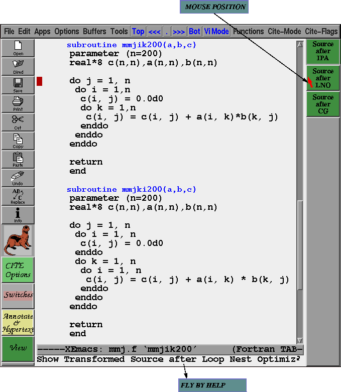
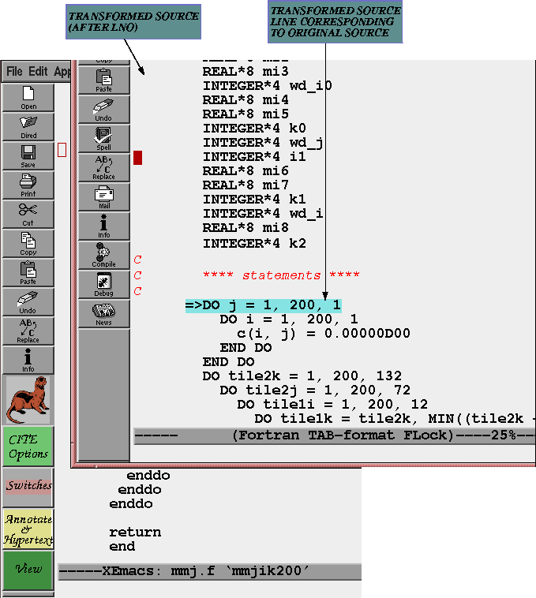

As the following figure suggests the "View Transformed" toolbar in CITE can be used to view the transformed source after various phases of the compiler such as Loop Nest Optimizer, IPA (post inlining), and the Code Generator.

Clicking on "Source After LNO" button brings up a new window in which the transformed source after the Loop Nest Optimizer is displayed. Notice the a line has been highlighted. This line in the transformed source corresponds to the line on which the cursor was present in the original source. Similarly it is possible to view the transformed source post inlining and after the code generation as well.

Both the fortran and C compiler provide a special compiler option -flist and -clist that allow the transformed source after the Loop Nest Optimizer to be saved. For example specifying
% f77 -64 -mips4 -O3 -flist -FLIST:ftn_file=test-after-lno.f test.fproduces a new file test-after-lno.f that contains the fortran version of the transformed source. For more details on such options check out the Makefile in the Examples directory that come when CITE is installed.